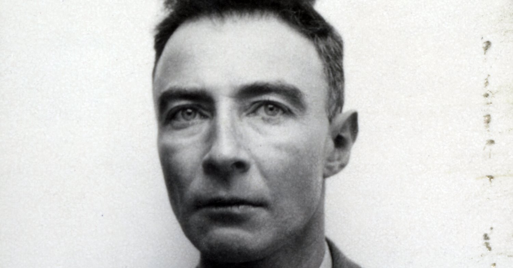

Julius Robert Oppenheimer
Físico Teórico, Pesquisador Científico, Diretor de Instituto de Estudos Avançados

Biografia de Julius Robert Oppenheimer
Julius Robert Oppenheimer foi um físico teórico americano e diretor do Laboratório Nacional de Los Alamos, durante a Segunda Guerra Mundial. Geralmente, é creditado como o "pai da bomba atômica" por seu papel no Projeto Manhattan, o empreendimento de pesquisa e desenvolvimento que criou as primeiras armas nucleares. Oppenheimer estudou na Universidade de Harvard, onde concluiu um bacharelado em química em 1925. Posteriormente estudou física na Universidade de Cambridge e na Universidade de Göttingen, onde obteve seu doutorado (PhD) em 1927, sob a orientação de Max Born. Ocupou cargos acadêmicos na Universidade da Califórnia em Berkeley e no Instituto de Tecnologia da Califórnia, fazendo contribuições significativas no campo da física teórica, incluindo mecânica quântica e física nuclear. Durante a Segunda Guerra Mundial, foi recrutado para trabalhar no Projeto Manhattan e, em 1943, foi nomeado diretor do Laboratório de Los Alamos no Novo México, encarregado de desenvolver as armas nucleares. A liderança e a experiência científica de Oppenheimer foram fundamentais para o êxito do projeto. Ele estava entre aqueles que observaram o teste Trinity, em 16 de julho de 1945, em que a primeira bomba atômica foi detonada com sucesso. Mais tarde, comentou que a explosão trouxe à sua mente palavras da escritura hindu Bagavadeguitá: "Agora eu me tornei a Morte, a destruidora de mundos". Em agosto de 1945, as bombas atômicas foram usadas nas cidades japonesas de Hiroshima e Nagasaki, o único uso de armas nucleares em um conflito.Linha do tempo
1904 Julius Robert Oppenheimer nasce em 22 de abril, na cidade de Nova Iorque, nos Estados Unidos.
1922 Oppenheimer inicia seus estudos na Universidade Harvard, onde se interessa
principalmente por química e física.
1925 Conclui seu bacharelado em química na Universidade Harvard.
1926 Oppenheimer viaja para a Europa e passa um ano estudando em várias instituições, incluindo a Universidade
de Cambridge e a Universidade de Göttingen.
1927 Retorna aos Estados Unidos e começa a frequentar a
Universidade da Califórnia em Berkeley para obter seu doutorado em física teórica.
1929 Oppenheimer conclui seu doutorado e é contratado como professor assistente na Universidade
da Califórnia em Berkeley.
1942-1945 Durante a Segunda Guerra Mundial, Oppenheimer lidera o Projeto Manhattan, um programa
de pesquisa e desenvolvimento que resulta na criação da primeira bomba atômica.
1945 A bomba atômica é testada com sucesso no deserto do Novo México, em um local conhecido como Trinity.
Oppenheimer é um dos principais cientistas envolvidos no projeto.
1947 Oppenheimer é nomeado diretor do Instituto de Estudos Avançados em Princeton, onde continua a trabalhar
em pesquisa científica e aconselhamento governamental.
1954 Oppenheimer é acusado de ter ligações com o comunismo durante a era do macarthismo e tem sua autorização
de segurança revogada pelo governo dos Estados Unidos.
1967 Julius Robert Oppenheimer falece em 18 de fevereiro, aos 62 anos de idade, em Princeton, Nova Jersey.
Se quiser saber mais sobre Julius Robert Oppenheimer , Clique Aqui
Fontes utilizadas na página: Timetoast e eBiografia